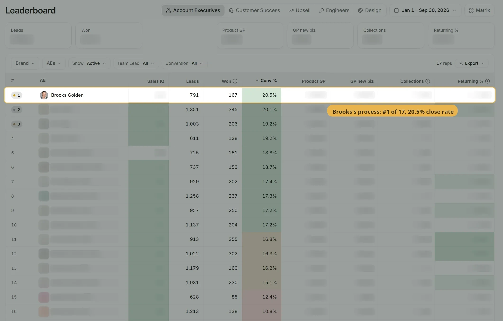

What we've built.What we're proving now.
Measured case studies show completed outcomes. Active pilots show the systems Keelwater is currently building inside tax and accounting firms.
An AI-enabled workflow, measured end to end.
Proof that the implementation capability already works. This engagement was outside accounting, but the operating problem was the same: information lived across calls, CRM and delivery systems, and people manually moved context between them. The resulting AI-enabled workflow connected the systems and automated the handoffs end to end.
Industry: made-to-order products (branded inflatables) · outside accounting
Close rate for the year: 20.5% - the first rep to average over 20%. Company-wide: 10.6%. Started the year 13th of 15.
Company leaderboard, Jan 1 to Sep 30Median time from a web inquiry to the first reply, February vs July.
Web-form leads with exact timestampsShare of first replies that got an answer from the customer, February to April vs July.
Work mailbox, 5,730 messagesLength of a busy-season workday, before and after the system.
Operator's estimate- Every reply, quote and follow-up typed by hand, one deal at a time
- Quotes rebuilt line by line in the CRM
- Follow-ups remembered, not tracked
- Handoffs to production reassembled from the thread
- First replies drafted about the customer's actual project, in minutes
- Quotes filled automatically, every quote in one searchable index
- Follow-up cadences and watchdogs on every deal
- Closed deals handed to production with the full decision history

Building the operating layer inside a modern tax & advisory firm
The firm was already unusually AI-forward: it used modern software and internal Claude skills. The limitation was not AI awareness. Its systems still operated independently, workflow state lived in multiple places, and staff manually coordinated the gaps between practice management, communication, spreadsheets and financial data.
Client and project operating layer
Multi-client QuickBooks / advisory context
Pilot presented anonymously. Results published only when measured.
Have the same problem?
Show us one workflow your team still manages by hand, and we'll show you where the coordination can move to software.